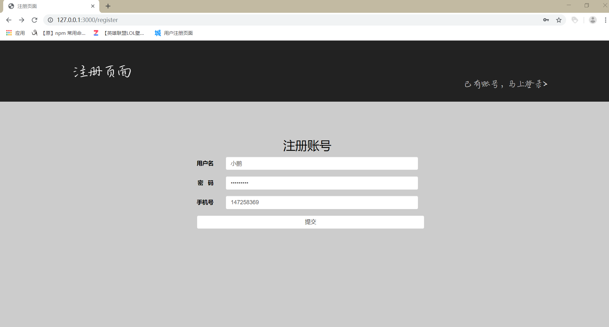

通过 Node.js + Express + MongoDB 实现网页注册账号 和 登入账号的功能
项目准备：
1： 事先准备好项目的页面 （首页页面 index.html）(登入页面 login.html) (注册页面 register.html)
2: 安装好 Node.js 需要使用的第三方模板
3： 设计路径设计
4： 理清功能需求
5： 创建 app.js router.js mgdb.js 三个 js 文件 和 public 和 views 文件夹
作用：
app.js 文件用于开启服务器
router.js 文件用于请求路径设计
mgdb.js 文件用于连接 MongoDB数据库
public文件夹用于存放公共文件 例如：三个页面的 css样式文件
views文件夹用于存放3个准备要使用到的页面
直接上代码说话把：
在 app.js文件中：
// 引入模板
var express = require('express');
// 引入第三方模块 用于获取POST请求数据
var bodyParser = require('body-parser');
// 加载 router.js 文件
var router = require('./router.js');
// 创建app
var app = express();
// 将 node_modules 和 public 的文件公开
app.use('/node_modules', express.static('./node_modules/'));
app.use('/public', express.static('./public/'));
// 用Express使用引擎模板
app.engine('html', require('express-art-template'));
// body-parser 配置
app.use(bodyParser.urlencoded({ extended: false }));
app.use(bodyParser.json());
// 把路由容器挂载到 app 服务中
app.use(router)
app.listen(3000, function(){
console.log('服务器启动成功了，可以通过 http://127.0.0.1:3000/ 来进行访问');
});在 router.js 文件中
// 引入模板
var fs = require('fs');
var express = require('express')
// 引入 mgdb.js文件
var Mgdb = require('./mgdb.js')
// 1:创建一个路由容器
var router = express.Router()
// 2: 把路由都挂载到 router 路由容器中
/*首页页面*/
router.get('/', function(req,res) {
res.render('index.html')
})
/*注册页面*/
router.get('/register', function(req,res) {
res.render('register.html')
})
/*登入页面 */
router.get('/login', function(req,res) {
res.render('login.html')
})
/* 注册页面 提交数据 POST*/
router.post('/login', function(req,res) {
// 把数据保存在 MogoDB 数据库中
// req.body 就是保存的数据内容
new Mgdb(req.body).save(function(err) {
if (err) {
return res.status(500).send('Server error.')
}
res.redirect('/login')
})
})
/*登入页面 POST*/
router.post('/', function(req,res) {
// 输入数据后 获取数据 与数据库的数据比对
var username = req.body.username
var password = req.body.password
Mgdb.findOne({username:req.body.username, password:req.body.password}, function(err,ret) {
if(err) {
return res.status(500).send('Server error.')
} else {
// 如果账号或者密码有误 ret 就是null
if(ret === null) {
res.send('账号或密码有误')
} else {
// 如果账号密码正确 ret 返回的就是数据库中的数据对象
// 获取这个用户名 渲染到首页页面
var name = ret.username
res.render('index.html', {
name: name
})
}
}
})
})
// 3. 把 router 导出
module.exports = router在 mgdb.js 文件中
// 引入模板
var mongoose = require('mongoose')
// 定义一个 schema
var Schema = mongoose.Schema
// 1. 连接数据库
// 指定连接的数据库不需要存在，当你插入第一条数据之后就会自动被创建出来
mongoose.connect('mongodb://localhost/login')
// 2. 设计文档结构（表结构）
var userSchema = new Schema({
username: {
type: String,
required: true // 必须有
},
password: {
type: String,
required: true
},
mobile:{
type: Number,
required: true
}
})
// 4. 当我们有了模型构造函数之后，就可以使用这个构造函数对 users 集合中的数据进行操作了（增删改查）
// 3. 将文档结构发布为模型
// 直接导出模型构造函数
module.exports = mongoose.model('Mgdb', userSchema)
写好着三个主要文件后，通过 cmd 执行 app.js 文件，在浏览器可以通过 http://127.0.0.1:3000/ 访问来测试
效果图如下：

如果填写密码或者用户名错误的话就会响应 账号或密码有误 这就随便的实现下功能没有设计页面了
这就是整个 网站页面的 账号注册 和 账号登入的基本功能， 实现整个小demo功能的思路还是比较清晰的。作为一个正着学习前端知识的小白，为了实现整个小demo，事先准备了好了路由设计来保证自己的思路清晰，大概写了一个半小时把。
2019-12-14 19:50:47